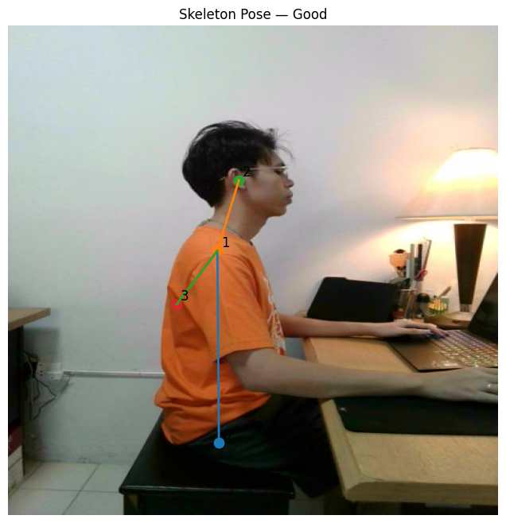
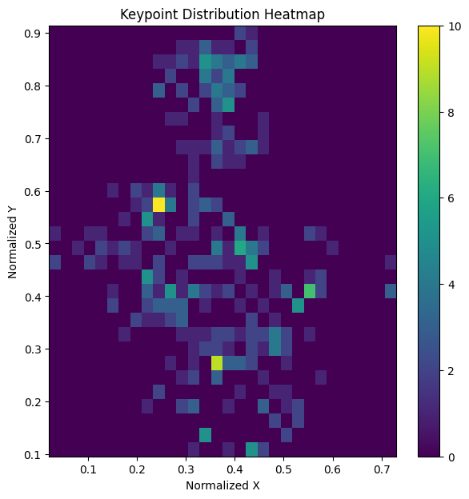
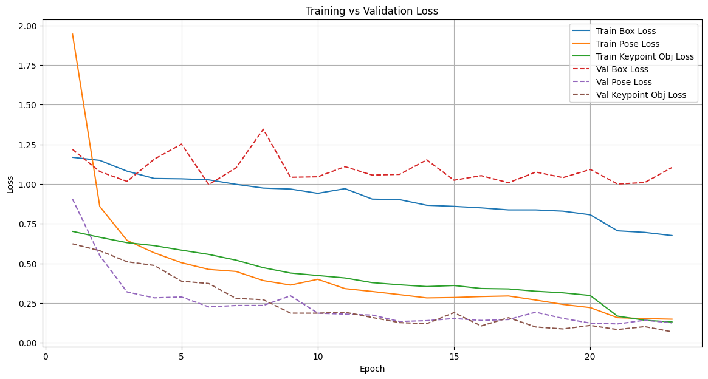
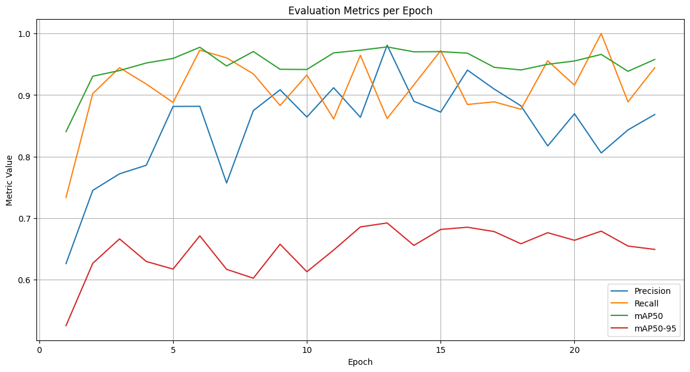
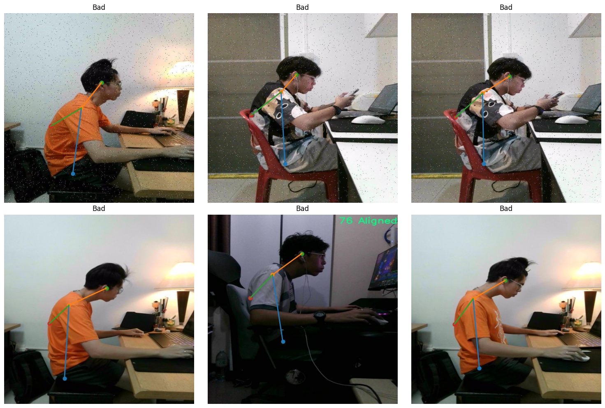
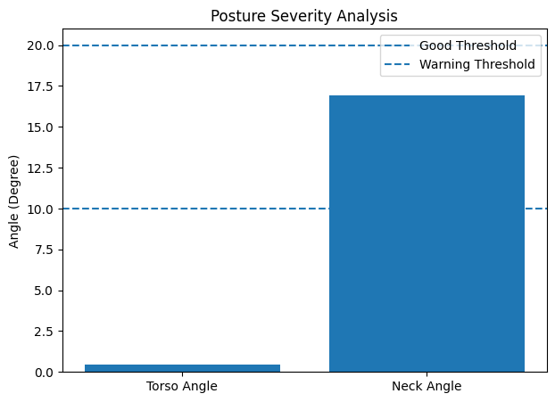

INTRODUCTION & GOALS
Silent Longitudinal Posture Analytics
A passive, AI-powered system designed to run silently in the background of study or work sessions. Unlike noisy real-time alerting systems that disrupt user focus, this research focuses on longitudinal tracking of sitting posture quality to prevent Musculoskeletal Disorders (MSDs) such as kyphosis, lower back pain, and shoulder strain.
Research Objectives
- Passive ergonomic assessment without continuous notification alerts.
- Detection of spine curvature bend points under prolonged laptop usage.
- Historical sessions reporting to aid clinical and user ergonomics.
Data Processing Pipeline Flow
DATA ENGINEERING
Primary Dataset & Annotations
Ergonomic sitting postures were captured using custom webcam devices under a range of lighting conditions and vertical/horizontal camera tilts. Roboflow was used for high-fidelity pose keypoint annotations.
Keypoint Definitions
| Keypoint ID | Anatomical Marker | Physical Purpose |
|---|---|---|
| KP0 | Hip | Pelvic seating anchor reference |
| KP3 | Spine | Detects lumbar curvature bends |
| KP1 | Shoulder | Upper back alignment reference |
| KP2 | Head | Forward tilt & cervical inclination |
Visual Annotations & Spatial Distribution


DEEP LEARNING MODEL
YOLOv8-Pose Performance
A customized Ultralytics YOLOv8 nano pose architecture was trained using PyTorch CUDA acceleration for 150 epochs. No overfitting is visible, ensuring high generalizability under different clothes, silhouettes, and lighting.
Generalizability Details
The generalization error is extremely low. The final Validation Loss Gap is capped at just 0.023. This verifies the model is robust to background changes, minor occlusions, and clothing variations.
Model Training Metrics & Validations



MATHEMATICAL ENGINE
Continuous Posture Physics
We calculate body angles using trigonometric coordinate vectors. Scoring operates dynamically on a continuous scale to prevent artificial data discontinuities in longitudinal charts.
Geometrical Formulas
θ_torso = (θ_lower_spine * 0.3) + (θ_upper_spine * 0.7)
θ_upper_spine = atan2(abs(x_shoulder - x_spine), abs(y_spine - y_shoulder))
θ_lower_spine = atan2(abs(x_spine - x_hip), abs(y_hip - y_spine))
θ_neck = atan2(abs(x_head - x_shoulder), abs(y_shoulder - y_head))
Geometric Curvature Analysis

ACTIVE MONITORING
Realtime Video Inference
The live camera loop runs continuous pose predictions. It instantly overlays estimated skeletal vectors, computed joint inclination degrees, continuous scores, and postural classifications.
Interactive Captures
Pressing the hotkey S inside the camera display window will instantly take a snapshot of the current frame and write it directly to the dashboard assets, immediately updating the visual on the right.
Status Threshold Map
- Excellent (Score ≥ 80): Back upright, minimal slouching detected.
- Moderate (Score ≥ 60): Slight shoulder tilt or head tilt.
- Poor (Score < 60): Significant spine curvature or forward neck slouch.
Live Demonstration Overlay

SESSION RESULTS
Longitudinal Session Summary
Longitudinal metrics are automatically synchronized from python immediately upon completing a work or study session. Renders all key ergonomics and fatigue metrics dynamically.
Session Metrics
System Status
Session Posture Degradation Graph